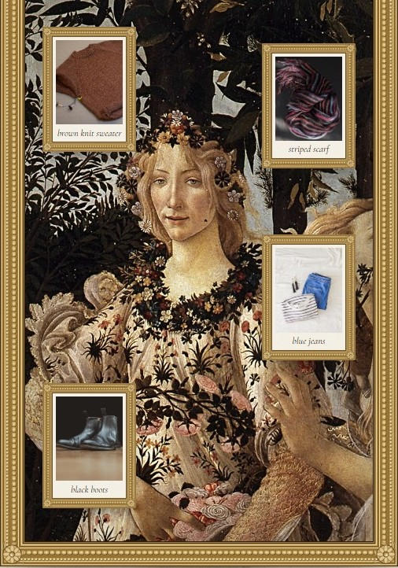
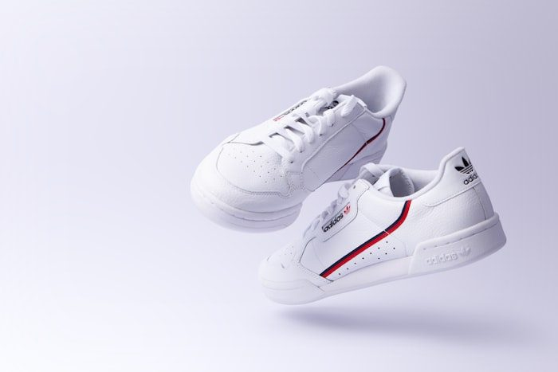
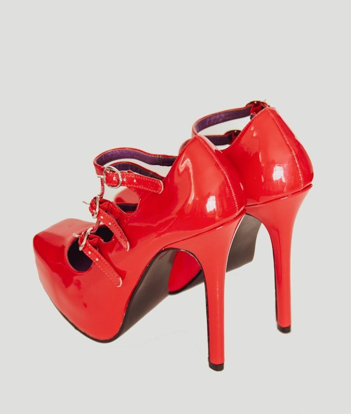
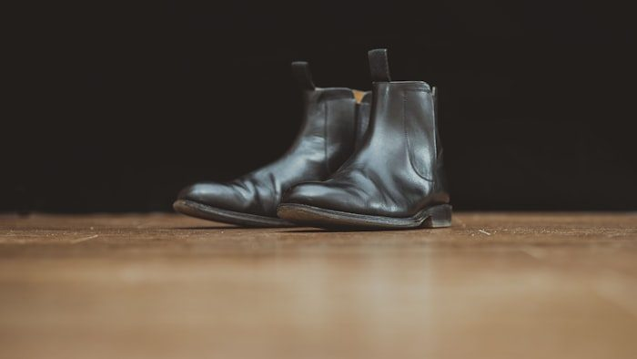
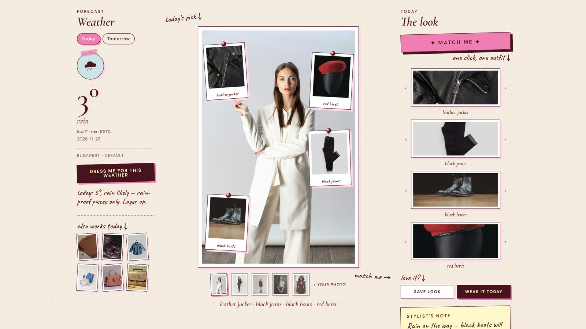
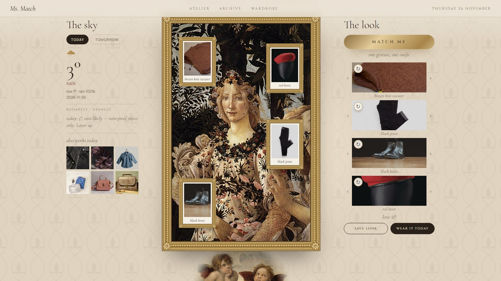
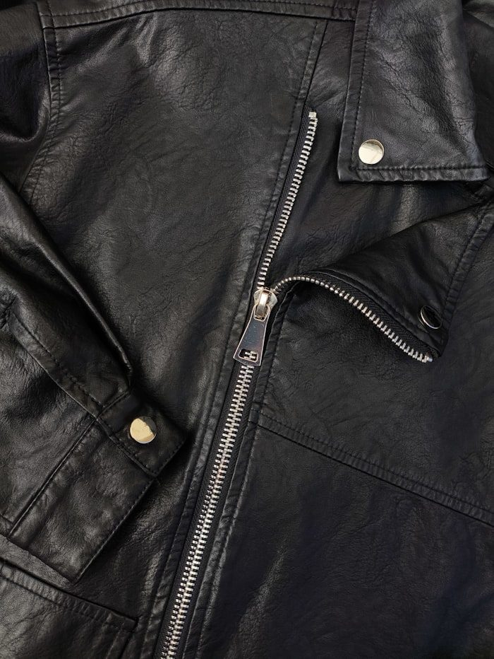
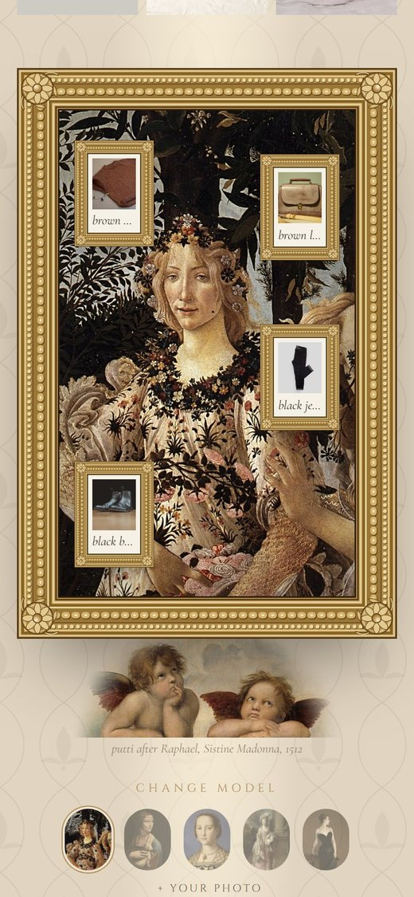

I · per chi, e perché
For people who'd rather decide in one click than stand at the wardrobe.
WhyMy closet doesn't know today's weather.
Ms. Match · Inez · free · no account · your photos stay in your browser

II · la prova
A real run of the live atelier · Budapest, 26 November 2026, 3° and rain
III · perché funziona
I checked it, not the agent.



reviews/08-readme-promises.md · tests/rules.test.js · 17 October 2026
IV · cosa ho imparato
September

“It worked. It never felt like mine.”
27 October

A page I love opening is a page I open every morning.
commit 8f2c9a8 · the same closet and code, a second page
V · e adesso


Let today's weather pick today's outfit.
esst-prog2.github.io/ms_match/promo/
Inez · free · no account · your photos stay in your browser